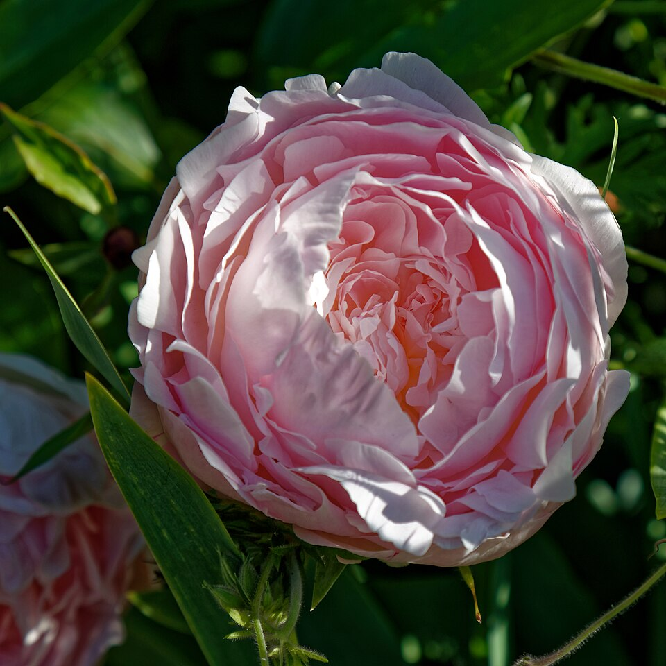

Clásico · mayo y octubre
Qué flores regalar el Día de la Madre (y cuándo toca en tu país)
No hay un solo Día de la Madre: España lo celebra el primer domingo de mayo, México cada 10 de mayo, media América el segundo domingo y Argentina en octubre.

- España y Portugal
- 1.er domingo de mayoclaveles y peonías
- México
- 10 de mayorosas y claveles
- EE. UU. y buena parte de América
- 2.º domingo de mayoclaveles
- Argentina
- 3.er domingo de octubrerosas y liliums
Cuándo es el Día de la Madre en cada país
Las fechas que caen en domingo cambian cada año. Estas son las de los próximos dos, calculadas con la misma regla que usa el calendario:
| País | Regla | 2027 | 2028 | Flor típica |
|---|---|---|---|---|
| España y Portugal | 1.er domingo de mayo | 2 may | 7 may | Claveles, peonías |
| México, Guatemala y El Salvador | 10 de mayo | 10 may | 10 may | Rosas y claveles |
| EE. UU., Colombia, Perú, Chile, Venezuela, Ecuador, Uruguay, Brasil, Italia y más | 2.º domingo de mayo | 9 may | 14 may | Claveles |
| Argentina | 3.er domingo de octubre | 17 oct | 15 oct | Rosas y liliums |
Otros países tienen fecha propia: Paraguay (15 de mayo), Bolivia (27 de mayo), Nicaragua (30 de mayo), República Dominicana (último domingo de mayo), Costa Rica (15 de agosto) y Panamá (8 de diciembre). El calendario de Florario recoge las cuatro fechas más extendidas.
Qué flores regalar el Día de la Madre
- Claveles: la flor original del Día de la Madre y la más barata. Aguantan muchos días en agua.
- Peonías: el clásico en España; mayo es justo su temporada.
- Rosas: en México, el ramo que acompaña a la serenata y la comida familiar.
- Liliums: en Argentina, donde la fecha cae en plena primavera.
Si dudas del color, el rosa es el más asociado a esta fecha: cariño y agradecimiento sin la carga romántica del rojo.
Por qué el clavel es la flor del Día de la Madre
Anna Jarvis impulsó el Día de la Madre en Estados Unidos en 1908 y eligió el clavel, la flor favorita de su madre. Desde allí la fecha, el segundo domingo de mayo, y la flor se extendieron a buena parte de América y Europa.
Por qué cada país lo celebra un día distinto
- España: el primer domingo de mayo, el mes que la tradición católica dedica a la Virgen.
- México: fecha fija desde 1922, cuando el periódico Excélsior impulsó la celebración.
- Estados Unidos y gran parte de América: el segundo domingo de mayo, por Anna Jarvis.
- Argentina: el tercer domingo de octubre, así que coincide con la mejor época de flores del hemisferio sur.
Preguntas frecuentes
¿Cuándo es el Día de la Madre en España en 2027?
El domingo 2 de mayo de 2027. En España se celebra siempre el primer domingo de mayo; en 2028 será el 7 de mayo.
¿Cuándo es el Día de las Madres en México?
Siempre el 10 de mayo, caiga en el día que caiga. Es fecha fija desde 1922.
¿Cuándo es el Día de la Madre en Colombia, Chile y Perú?
El segundo domingo de mayo: el 9 de mayo de 2027 y el 14 de mayo de 2028.
¿Cuándo es el Día de la Madre en Argentina?
El tercer domingo de octubre: el 17 de octubre de 2027 y el 15 de octubre de 2028.
¿Qué flor se regala el Día de la Madre?
El clavel es la flor tradicional desde 1908. En España también son muy típicas las peonías, en México las rosas y en Argentina los liliums.
Última revisión: .